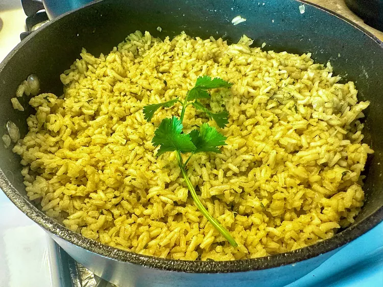

Arroz Verde with Hatch Chiles
Home

Arroz verde is normally made with poblano peppers. My family likes spicy food so I have elevated the heat in this green rice by using Hatch chiles. If you are sensitive to heat, use poblano peppers.
- 2 Hatch green chiles.
- 1 (14 ounce) can chicken broth.
- 1/2 cup chopped cilantro.
- 2 tablespoons of olive oil.
- 1 cup long grain rice.
- 1/2 cup of diced onion.
- 2 large garlic cloves, passed.
- 1 tablespoon chicken bouillon, such as Knorr.
- 2 teaspoons of salt.
- 1/8 teaspoon ground cummin.
And how to make this marvellous food?
- Place Hatch chiles directly on the grates of a gas stove. Cook over medium heat, flipping with tongs occasionally, until blackened and charred, about 5 minutes. Place in a sealed plastic bag and allow to cool, 7 to 8 minutes.
- Peel off charred skins; remove seeds. Place chiles, chicken broth and cilantro in the jar of a blender and blend until smooth. Set aside.
- Heat oil in a skillet over medium heat until it shimmers; add rice and onion. Cook and stir until lightly browned, about 2 minutes. Add garlic and cook until fragrant, about 1 minute. Stir in chicken bouillon, salt, and cumin. Add chile mixture and bring to a boil. Reduce heat to low; simmer until rice is tender, 25 to 30 minutes.